Locații de nuntă în județul Neamț
- locații în director
- 19
- cu cazare în registrul SITUR
- 8
- medie ponderată Google
- 4,6 / 5
- evaluări Google
- 10.119
Cum alegi unde mergi la vizionare
Printre punctele de plecare din județ se numără Bistrița, Târgu Neamț, Pângărăcior și Chirițeni. Pentru un weekend cu invitați din mai multe orașe, marcați pe hartă separat cazarea și intrarea la ceremonie. Așa puteți cere un orar de transport realist pentru ambele sensuri.
Curtea Pensiunii Almaș apare în relatarea unui oaspete. Dacă o vedeți într-o zi cu pensiunea puțin ocupată, cereți și imagini cu exteriorul folosit pentru o masă. Poate rămâne liber drumul către camere după amplasarea scaunelor? Pentru adresele din Pângărăcior sau Chirițeni faceți estimarea transportului pornind din locul real în care se va caza grupul, mai ales dacă invitații sosesc pe rând.
Două adrese pentru o zi de vizionări
Pe hartă, între aceste două proprietăți sunt 4,0 km în linie dreaptă. Deschide indicațiile de drum din fișe ca să vezi traseul pe șosea înainte de a stabili a doua întâlnire.
- La Curtea Domnească · Str. Ștefan cel Mare 10, 610101 Piatra Neamț
- Agropensiunea Ozon · Strada Petru Movilă 223, Bistrița
Explorează după localitate
Toate locațiile din județul Neamț
Ordinea ține cont de nota Google și de numărul evaluărilor. Cum calculăm ordinea
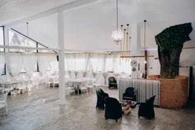
Fotografie a locației · Sursa fotografiei Bistrița · Căsuță
"La căsuțe Luxury" Alexandru cel Bun, PIATRA-NEAMT
Căsuțe cu ciubăr și jacuzzi pe strada Pensiunilor din Bistrița (Neamț), notă 4,9. Sală de evenimente pomenită, dar fără nunți documentate.
Str. Pensiunilor, 617508 Bistrița+40 755 046 481
Hartă ilustrată Bistrița · Cazare
Agropensiunea Ozon
Agropensiunea Ozon. O familie cazată la Ozon descrie acces cu mașina și parcare gratuită în incintă, o cameră spațioasă și un mic dejun consistent.
Strada Petru Movilă 223, Bistrița+40 761 115 280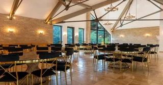
Fotografie a locației · Sursa fotografiei Vădurele · Pensiune
Pensiunea Vladurel
Pensiunea Vladurel. După un sejur la Vladurel, un oaspete descrie piscina interioară încălzită, sauna și ciubărul într-o zonă liniștită de munte.
615106 Vădurele+40 733 667 077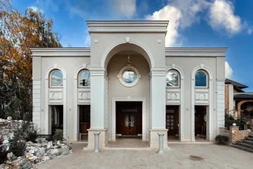
Fotografie a locației · Sursa fotografiei Agapia · Pensiune
Pensiunea Eden
Pensiunea Eden. La Casa Eden, un organizator descrie un eveniment de aproximativ o sută de persoane cu meniu tradițional, în stil rustic, servit la bufet.
DN15C, 617005 Agapia+40 728 821 013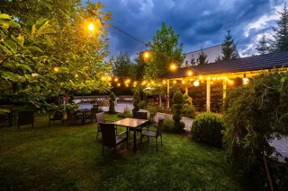
Fotografie a locației · Sursa fotografiei Târgu Neamț · Hotel
Aristocratis
Hotel în Târgu Neamț cu sală de evenimente, terasă spre grădină și seră proprie de legume bio; media 4,7 din 1.527 de evaluări.
Bulevardul Ștefan cel Mare 245, 615200 Târgu Neamț+40 233 791 986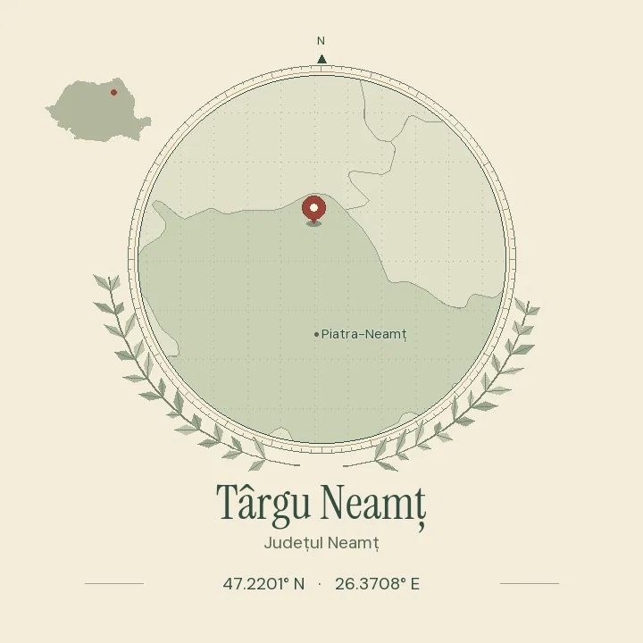
Hartă ilustrată Târgu Neamț · Hotel
Pensiunea Belvedere
Pensiunea Belvedere, Târgu Neamț. Pentru cei care fac drumul special pentru nuntă, o astfel de combinație are valoare practică.
Str. Marasesti Nr. 215, 615200 Târgu Neamț+40 747 295 151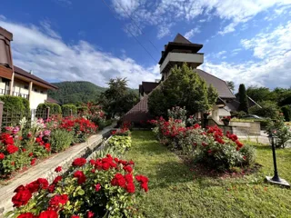
Fotografie a locației · Sursa fotografiei Pângărăcior · Vilă
Castelul de Smarald
Vilă cu arhitectură atent lucrată pe DN15 la Pângărăcior, cu grădină, ciubăr și camere lăudate pentru curățenie; 4,7 din 147 de evaluări.
DN15, 617307 Pângărăcior+40 753 477 627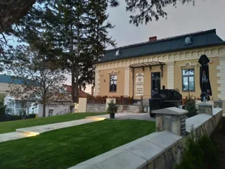
Fotografie a locației · Sursa fotografiei Piatra Neamț · Restaurant
La Curtea Domnească
Numele „La Curtea Domnească” i-a sugerat unui vizitator un meniu tradițional; la vizita lui, a găsit în schimb inclusiv supă thailandeză.
Str. Ștefan cel Mare 10, 610101 Piatra Neamț+40 729 080 610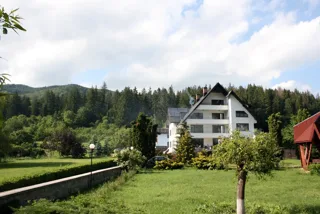
Fotografie a locației · Sursa fotografiei Almaș · Bed & Breakfast
Pensiunea Almas
Pensiunea Almas. Mirii care au ales Pensiunea Almaș spun că spațiul le-a ajuns pentru nunta lor, pe care o descriu drept mică spre medie.
str. Almasului nr. 166, 617201 Almas, comuna Garcina, Jud. Neamt+40 722 236 307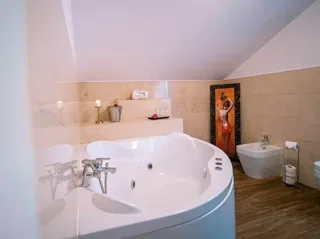
Fotografie a locației · Sursa fotografiei Chirițeni · Bed & Breakfast
Grădinile Romane
Pensiune cu restaurant gourmet și vedere spre lac la Chirițeni, Neamț; 4,5 din 1.146 de evaluări. Drumul de acces merită verificat.
Strada Debarcaderului, nr 70 Sat Chiriteni, Comuna Hangu, Judet Neamt Neamț, 617242 Chirițeni+40 752 804 617
Fotografie a locației · Sursa fotografiei Bistrița · Bed & Breakfast
Pensiunea Roua
Pensiunea Roua. Un client care a revenit la Roua din Bistrița descrie o cameră mare cu baie renovată și menționează locurile de parcare.
Strada Petru Movilă 225, 617508 Bistrița+40 753 053 260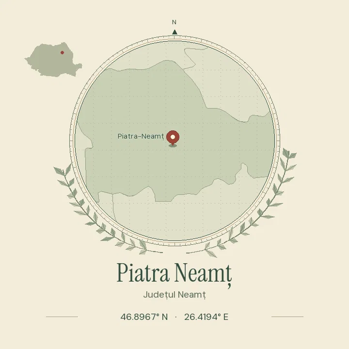
Hartă ilustrată Piatra Neamț · Cazare
Pensiunea Bachus
Pensiunea Bachus, Piatra Neamț. Un vizitator spune că a ajuns la cazare direct de la drumul principal și amintește restaurantul proprietății.
Strada Strămutați 48, 617185 Piatra Neamț+40 724 517 489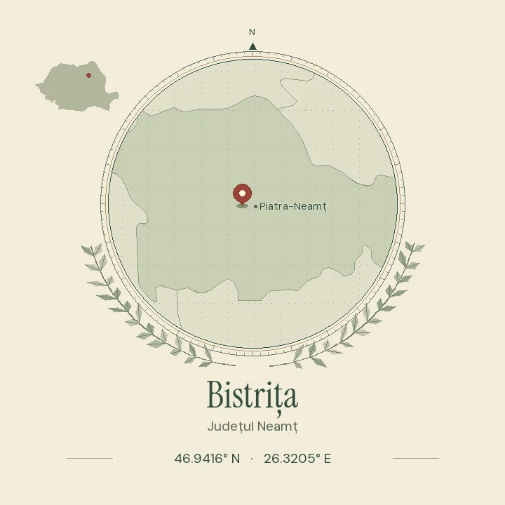
Hartă ilustrată Bistrița · Pensiune
Pensiunea Moldova
Apartamentul descris de un oaspete la Pensiunea Moldova avea două încăperi separate prin uși, un hol cu frigider și un balcon de unde se vedea lacul.
Str. Moldovei nr 2, 617508 Bistrița+40 751 048 199
Fotografie a locației · Sursa fotografiei Bistrița · Hotel
Pensiunea Royal Spa Piatra Neamț
Pensiunea Royal Spa Piatra Neamț. Pentru o întâlnire cu mai multe familii la Royal Spa, priviți împreună grădina, terasa și locul de joacă.
Str. Pensiunilor, 505617 Bistrița+40 744 664 889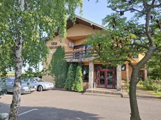
Fotografie a locației · Sursa fotografiei Piatra Neamț · Pensiune
Pensiunea Casa Moldoveana
Pensiunea Casa Moldoveana. Un călător oprit la Casa Moldovenească în drum prin Moldova își amintește în primul rând preparatele și liniștea locului.
Strada Mihai Viteazul 82, 610262 Piatra Neamț+40 233 233 666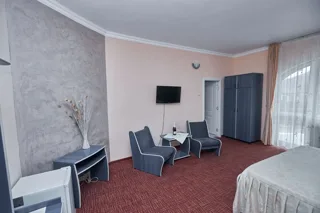
Fotografie a locației · Sursa fotografiei Bistrița · Hotel
Hotel Restaurant Belvedere
Hotel Restaurant Belvedere, Bistrița. Camera cu vedere la lac a fost partea plăcută a sejurului unui vizitator la Belvedere.
Strada Petru Movilă 168, 617513 Bistrița+40 233 261 470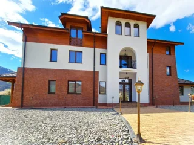
Fotografie a locației · Sursa fotografiei Stejaru · Hotel
Stejarro Conac Moldovenesc
Stejarro Conac Moldovenesc. Dacă aceste facilități sunt motivul pentru care invitații ar rămâne și a doua zi, cereți confirmarea programului pentru data aleasă.
Strada Pinului, 617311 Stejaru+40 748 474 360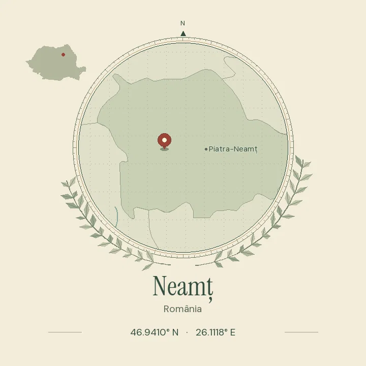
Hartă ilustrată Zona Bicaz · Hotel
Hotel Plutitor Lebada
Hotel Plutitor Lebada, Neamț. La Hotel Plutitor Lebăda, apropierea dintre terasă și cabine contează și după ce se termină cina.
DN15, 615100+40 748 110 400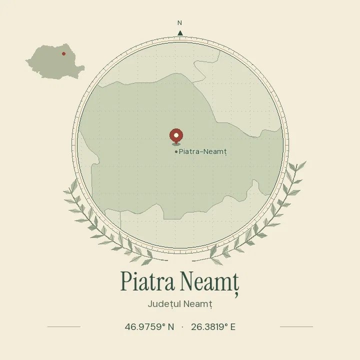
Hartă ilustrată Piatra Neamț · Castel
Poloboc
În Piatra Neamț, numele Poloboc apare pe hartă alături de o adresă care conține numărul 8A și de categoria „castel”.
Strada dealul preotii jud nr 8A, Piatra Neamț
Întrebări despre locațiile din județul Neamț
Unde pot dormi invitații în județul Neamț?
În registrul de cazare SITUR găsim Pensiunea Eden (30 de locuri de cazare), Aristocratis (30 de locuri de cazare), Pensiunea Belvedere (16 locuri de cazare). Verifică ce camere sunt libere pentru noaptea evenimentului.
Ce proprietăți din județul Neamț au grădină sau terasă?
Pensiunea Eden (grădină, terasă); Aristocratis (grădină, terasă); Castelul de Smarald (grădină). Cere administratorului condițiile de folosire pentru o petrecere privată.
Care locație din județul Neamț are cele mai multe evaluări Google?
Pensiunea Eden are 2.383 de evaluări în profilul Google folosit la documentare. Evaluările acoperă și alte experiențe la proprietate, inclusiv vizitele fără eveniment.
Unde apare o intrare accesibilă în județul Neamț?
Profilurile Google indică o intrare accesibilă la La Curtea Domnească. Pentru o cununie în exterior, cere detalii despre traseul dintre intrare și zona cu scaune.